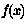

 Available Functions Window
This window displays all the functions (Java methods) which are
available for use when writing algebraic expressions.
They are grouped by the class which defines them, and displayed
in a tree-like structure.
When initially displayed, the window shows just the names of
the classes which provide methods.
By double-clicking on these names (or equivalently
by clicking on their 'handle': )
you can open them up to see the methods they contain.
The listing here doesn't describe what these methods do, but the
name and list of arguments may give you a clue.
Each method has a listing something like this:
float average( int, int )
which means that there is a function called "average" which takes two
arguments of type int (= integer), and returns a value of
type float (= floating point).
Using the Add button ( )
you can specify the name of a class to add to those available.
You should enter the fully-qualified class name (i.e. including the
dot-separated package path). The class that you specify must be
on the class path which was current when TOPCAT was started.
It is also possible to specify classes which should appear here
by supplying their names as the values of the system property:
)
you can specify the name of a class to add to those available.
You should enter the fully-qualified class name (i.e. including the
dot-separated package path). The class that you specify must be
on the class path which was current when TOPCAT was started.
It is also possible to specify classes which should appear here
by supplying their names as the values of the system property:
gnu.jel.static.classes
More than one class can be specified; their names should be separated
by colons. You can specify this property if you are starting
TOPCAT using the java command by using the -D flag:
java -Dgnu.jel.static.classes=my.package.Funcs1:my.package.Funcs2 \
-jar topcat.jar
or alternatively you can add a line like this to the
.starjava.properties file in your home directory:
gnu.jel.static.classes=my.package.Funcs1:my.package.Funcs2
Any public static methods declared in the classes specified in any
of these ways will be available for use in the expressions you use
to define synthetic columns or synthetic row subsets.